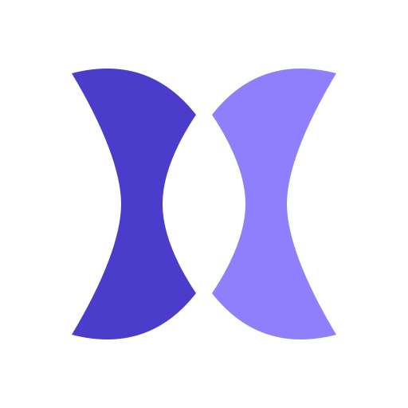
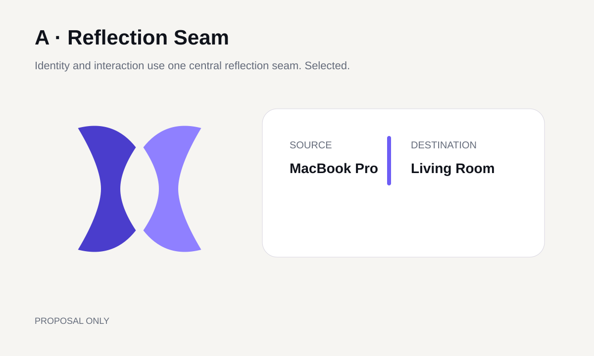
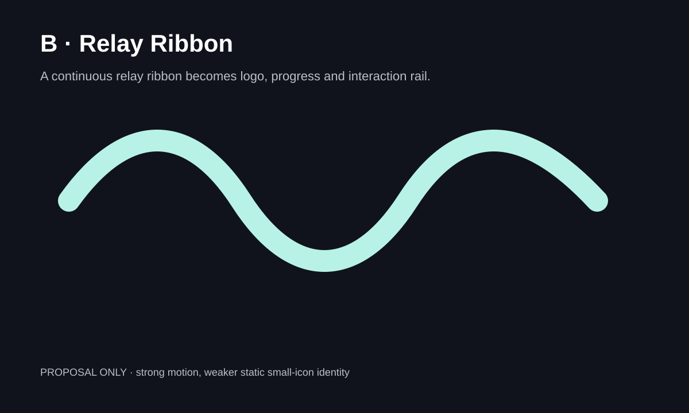
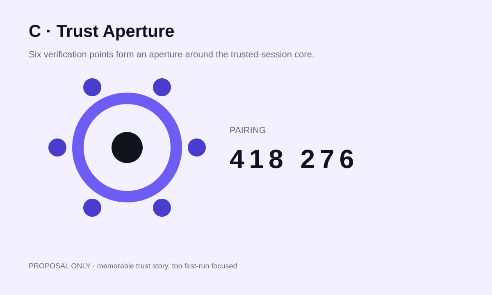
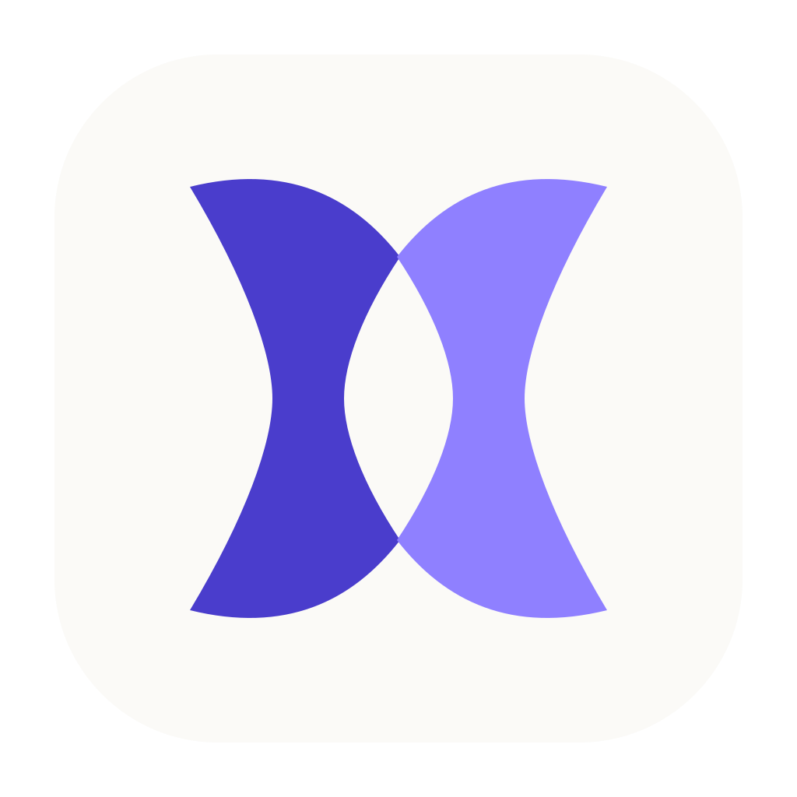
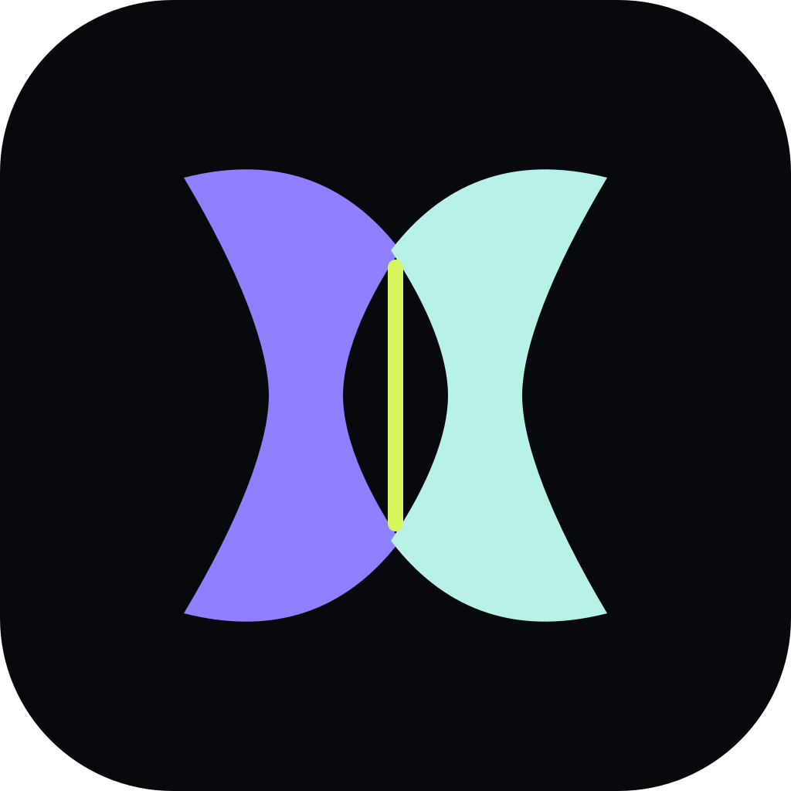
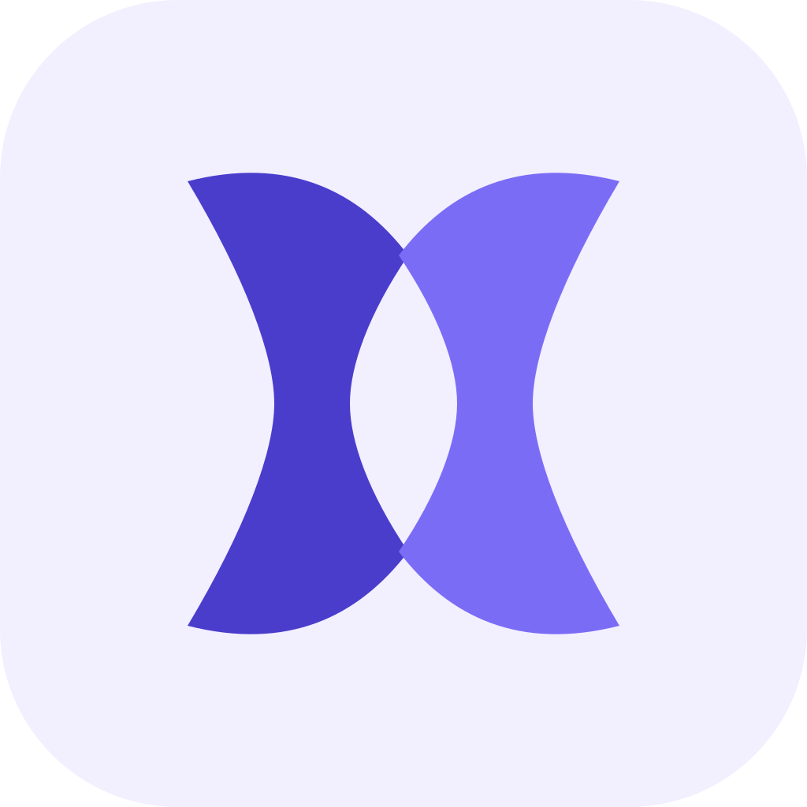

Miraya, built around the moment two screens trust each other.
A first-principles identity and interface built around a reflection seam, not generic casting symbols.
One plane, one decision.
Choose a source, choose a destination, then share. Technical controls stay secondary.
Three directions

A · Reflection SeamSelected: strongest static silhouette and everyday share model.

B · Relay RibbonStrong motion language; weaker at tiny sizes.

C · Trust ApertureStrong trust motif; too focused on first pairing.
Mac sender
No live desktop preview is implied. Choose a state:
Android / Google TV receiver
Distance-readable, D-pad first, safe-edge aware, with visible Back/Stop behavior.
Platform icons

macOSSoft dimensional plate.

Android / Google TVDark launcher field with high-visibility seam.

Future iOSFuture only — same silhouette, flatter Apple-style field.
Core specifications
480p15 / 720p30 / 720p60 / 1080p30 / 1080p60 are maximums with automatic adaptation.
System audio only, never microphone. Fit shows all; Fill crops; Stretch changes proportions. Symmetric edge margin 0–10%.
App viewport, physical output and mirroring encode ceiling are separate. RTT is network round trip, not total display latency.